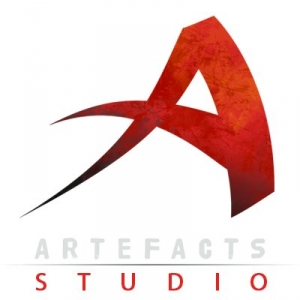
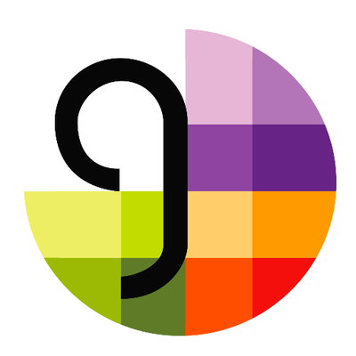
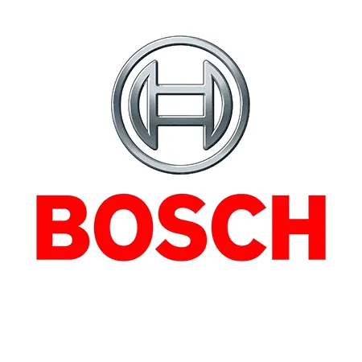
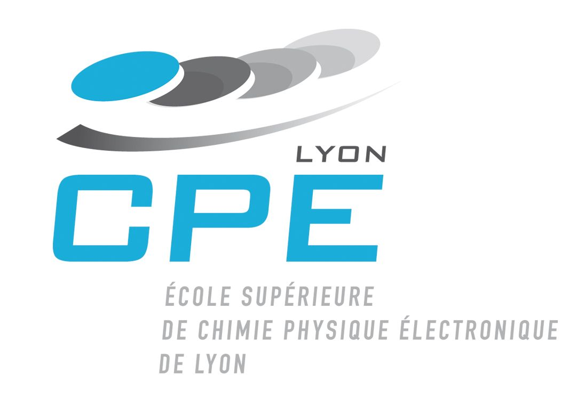

Après mon stage, j'ai été embauché par Artefacts Studio en tant que programmeur gameplay sur "Le Donjon de Naheulbeuk : L'Amulette du Désordre". J'ai notamment participé à l'élaboration des compétences passives du jeu, ainsi que des mécaniques de combat des boss. Plus généralement, j'ai pu développer des compétences techniques avec C# et Unity, mais aussi plus globalement liées au monde du jeu vidéo comme la communication avec les différents pôles, l'organisation en scrum, et les périodes de debug et stabilisation pour présenter une version du jeu au public.
- Création de features de combat : compétences passives et compétences de boss
- Amélioration et extension du système de prise de parole spontanée
- Participation au debug et à l'optimisation du code (mécaniques de combat, feedbacks, sauvegarde, chargements, etc...)
- Programmation C# et Unity
- Prise en main d'une codebase et d'un système existants pour l'ajout de features ou le debug
- Communication et organisation avec les autres membres de l'équipe de développement (jusqu'à 25 personnes sur le projet dont 10 programmeurs)
- Utilisation des outils de développement (SVN, BugTracking sur Mantis, Visual Studio, Unity)
Pour mon stage du projet de fin d'études, j'ai été recruté par Artefacts Studio pour travailler pendant 6 mois sur Sim2b, une technologie de simulation de relations sociales entre des intelligences artificielles. Pendant 3 mois j'ai travaillé en collaboration avec Caroline Faur (responsable R&D) à l'optimisation de la librairie, dans le but de l'utiliser en temps réel dans un jeu vidéo. Lors des 3 mois suivants, j'ai rejoint l'équipe de développement du jeu "Le Donjon de Naheulbeuk" pour y intégrer Sim2b à travers un système de prise de parole spontanée des personnages. Cela a permi d'introduire des variations de dialogues lors des échanges entre les personnages, en fonction de l'état de leur relation.
- Réécrire Sim2b (librairie C#) dans un paradigme orienté données pour diminuer son temps d'exécution (objectif < 1 ms par frame)
- Utiliser cette librairie dans le jeu vidéo "Le Donjon de Naheulbeuk" sur Unity, via un système de prise de parole spontanée des personnages
- Programmation C#
- Paradigme orienté données
- Base de données ontologique
- Profiling en C# et avec Unity

Grâce au partenariat entre mon école CPE Lyon et la formation Gamagora de l'Université Lyon 2, j'ai pu m'intégrer en tant que programmeur à une équipe de 15 personnes participant au Gamagora Game Show 2019 (GGS), pour aider à la réalisation d'un jeu vidéo en 3 mois.
L'équipe était divisée en 3 pôles (artistes, designers et programmeurs) et nous avons fonctionné avec une organisation scrum, avec pour objectif d'avancer chaque semaine vers la finalisation du projet. Nous avons choisi d'utiliser Unity comme moteur de jeu, ce qui a facilité la collaboration entre les différents pôles. Personnellement, j'ai travaillé à la programmation de shaders et à l'intégration d'une I.A. pour le jeu, puis j'ai participé à l'amélioration globale du jeu avant la présentation devant un public de professionnels du jeu vidéo, lors de la soirée du GGS le 3 Mai 2019.
- Programmation de shaders sur Unity (Highlight ou encore afficher les unités en transparence derrière un obstacle)
- Programmation d'une Intelligence Articielle grâce à un système de Machine à Etats Finie
- Optimisation du pathfind (avec NavMesh) : réduction du nombre de calculs, gestion des collisions avec les pentes, amélioration des transitions lors du recalcul forcé
- Feedbacks visuels au joueur (par exemple portée de la tourelle)
- Intégration des menus du jeu et du son
- Programmation C# et shader Unity
- Intelligence Artificielle pour le jeu vidéo
- Fonctionnement du pathfinding et optimisation
- Compréhension de ce qui plaît à ceux qui découvrent un jeu vidéo : gameplay, design, feedback etc...
- Travail en équipe : intéragir avec tous les différents pôles, bien communiquer
- Organisation en méthode agile avec Sprint hebdomadaire et scrum journalier

Dans le cadre de mon cursus scolaire, j'ai effectué une année de césure d'un an à l'étranger chez Bosch Hildesheim. J'ai effectué mon stage en R&D, secteur "Multimedia, Telematics and Surround Sensing systems", dans la branche "Computer Vision & Robotics".
Pendant mon stage j'ai été amené à travailler sur diverses missions comprenant du développement logiciel, du traitement d'image, de la programmation GPU sur système embarqué et de la robotique. La communication dans l'entreprise s'est faite en anglais.
- Développement d'un algorithme de calibration et d'un outil de labellisation interactif (sur Python) pour un appareil de mesure équipé d'une caméra.
- Développement et implémentation d'une chaîne de pré-traitement pour un nouveau type de caméra RGB-IR sur Jetson Board TX1 (CUDA)
- Utilisation de ROS (Robot Operating System) et implémentation de diverses fonctionnalités
- Programmation C++, Python, OpenCV et CUDA
- Théorie et application concernant la calibration de caméra, le traitement d'image ou la géométrie 3D
- Installation et implémentation sur système embarqué
- Travail autonome, parfois en équipe de 2, impliquant recherche, abstraction, communication et organisation
- Langue : Niveau C1 en anglais (selon le test de langue de l'OLS)

Après deux ans de Classes Préparatoires, j'entre à CPE pour un cursus de 3 ans, au cours duquel je décide de faire une année de césure entre les années 2 et 3 (voir expérience 2017-2018). Je termine le tronc commun 4ème de ma promotion (130 élèves) après 1 an et demi, puis choisis la majeure "Image, Modélisation et Informatique". Je suis actuellement en 5ème et dernière année du cursus ingénieur et serai diplômé au courant de l'année 2019.
- Traitement d'image (Matlab, OpenCV): Morphologie mathématique, Problèmes d'optimisation, Imagerie médicale, Calibrage, Compression, Vision par ordinateur
- Modélisation 3D (OpenGL): Rendu graphique (rastérisation et ray-tracing), Animation, Simulation de textile/fluide, Jeu vidéo, WebGL
- Informatique (C++, OpenCL): Cours C++, Programmation GPU, Calcul numérique avancé
Deux années de Classes Préparatoires aux Grande Ecoles pendant lesquelles j'ai pu repousser mes limites d'apprentissage et d'abnégation au travail. Au terme de la deuxième année où je finissais 5ème de ma classe de PC (45 élèves), j'ai passé les concours écrits des Mines, Centrale, CCP et e3a. J'ai décroché des oraux sur Paris pour Telecom SudParis dans la banque de concours des Mines et les oraux CCP ainsi que d'autres écoles moins connues. Mon choix s'est finalement tourné vers la formation en électronique de CPE Lyon, école du Concours Commun Polytechnique (CCP).
Baccalauréat Scientifique option Maths obtenu avec mention Très Bien (16.44 de moyenne).